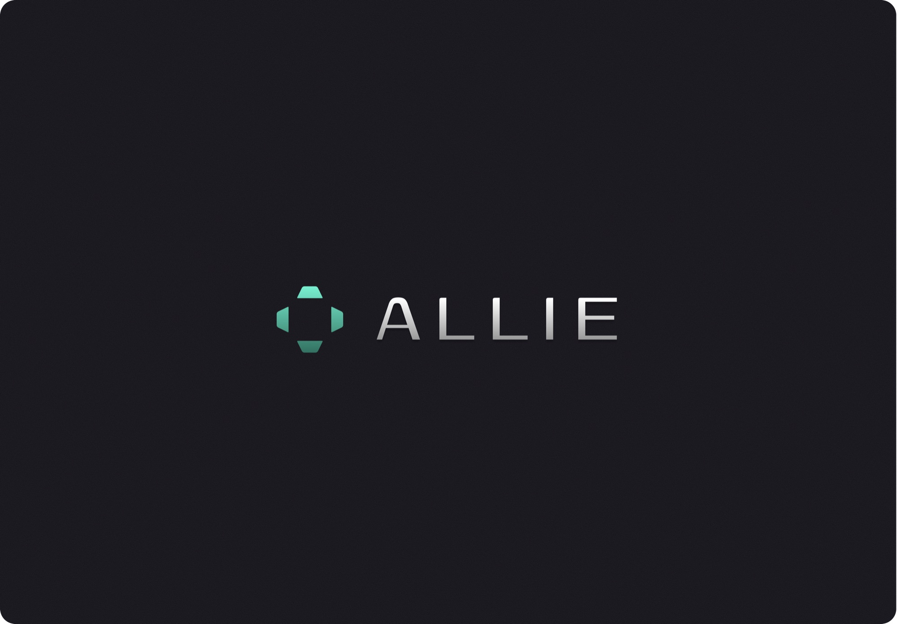
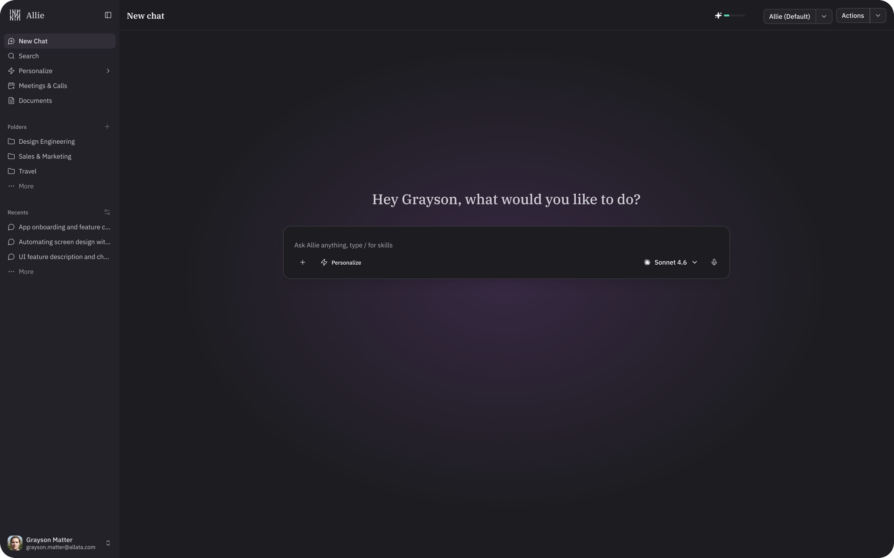
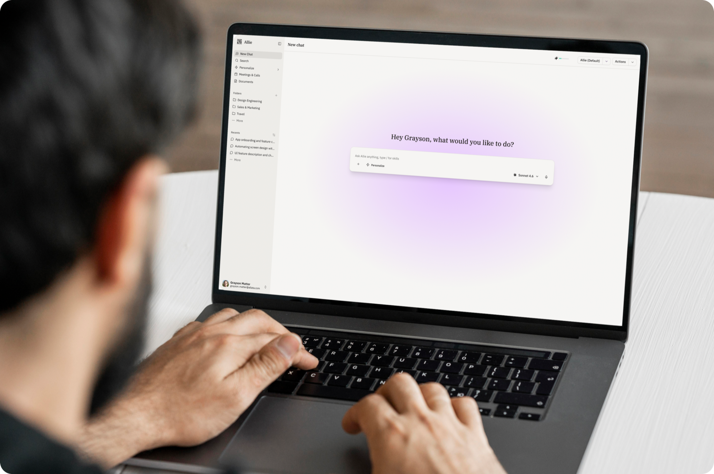
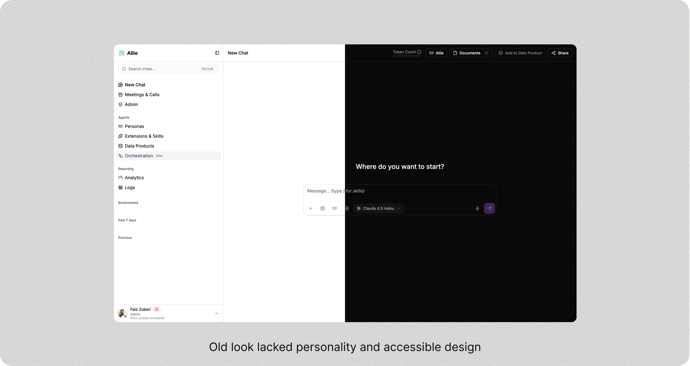
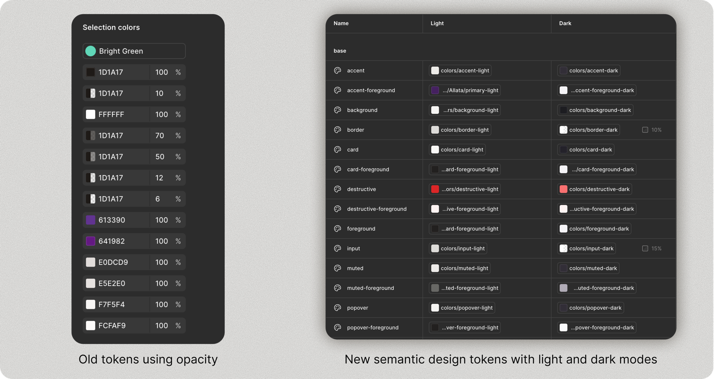
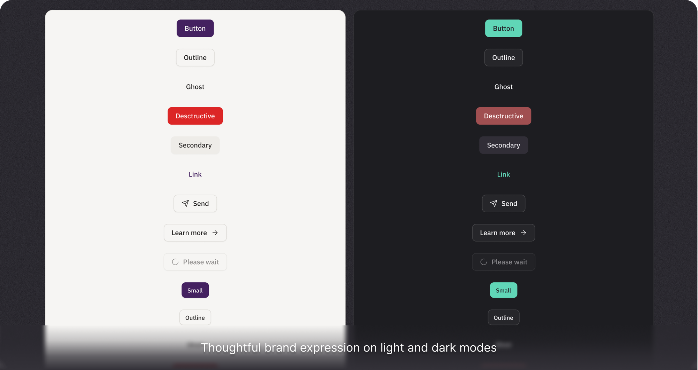
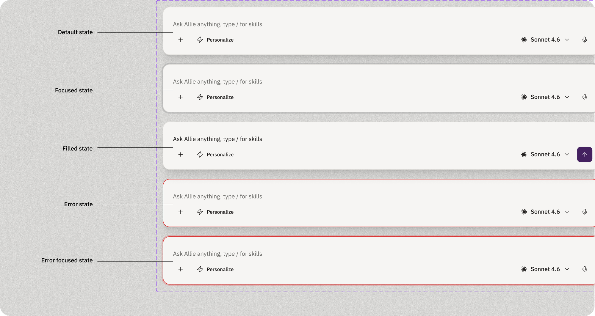
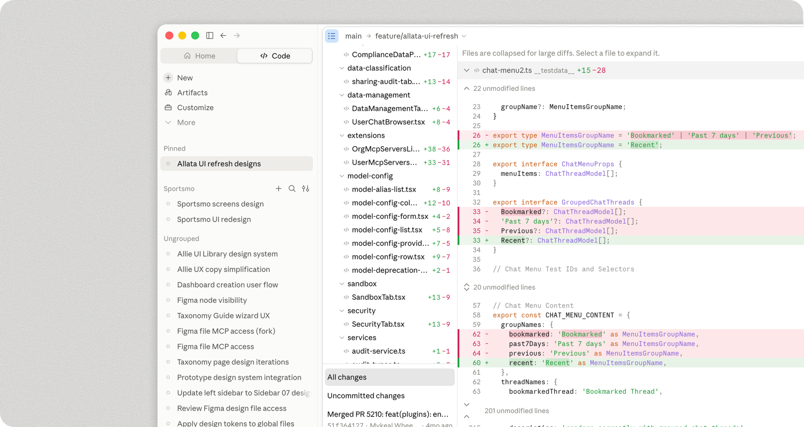
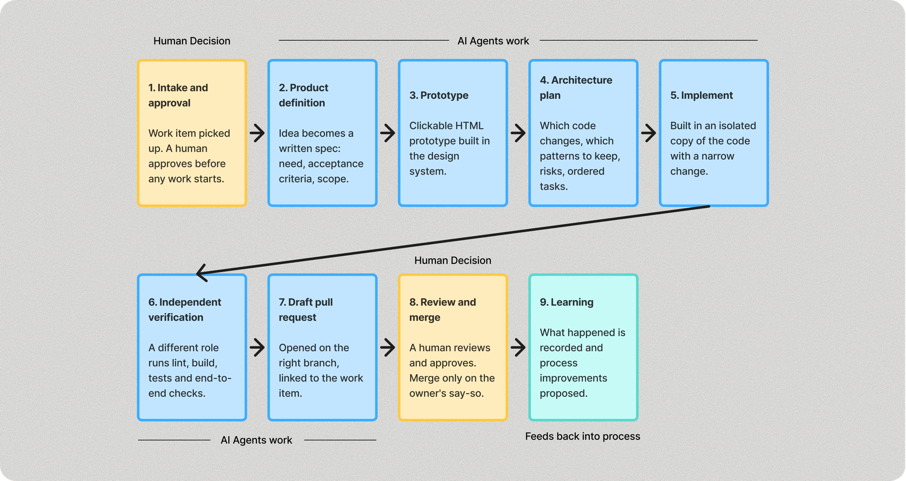

Allie
Turning an internal AI tool into a product clients would buy


Overview
Allata built Allie (originally called AllataBot) as an internal developer tool built with stock Shadcn components. Upon realizing its value, leadership decided to sell it to clients as an AI accelerator. It runs Claude, Gemini, OpenAI and Grok models inside the client's own environment and gets white-labeled to match each client's brand and knowledge base. I led the UX and UI redesign for this desktop-first (for now) product and rebuilt the entire app from the ground up with a customized component library. Along the way, I learned how the role of design and development has evolved. The job was to make a product that potential clients wanted to buy.

Problem
AllataBot itself worked fine, but it was clearly a template. It diminished Allata's credibility when this was positioned as its pitch for design and engineering capabilities. The original files used around 14 colors at varying opacities for a single hierarchy, so nothing could be tokenized and contrast shifted with whatever sat behind it. Dark-mode links failed WCAG outright and developers were hard-coding hex values. There was no system to build from.
Research
I audited every color in both light and dark modes against contrast standards, which turned something purely “aesthetic” into a measurable accessibility problem. I studied Claude, Perplexity and app screens across Mobbin for AI chatbot standards, progressive disclosure and dense chat data in a narrow column, then tested concepts against screenshots of the running build. The recurring finding was vocabulary. Allata was using arbitrary, non-standard jargon to name its features and products, which meant little to new users and likely confused them.

Building the design system
The standard move would have been a reskin. I replaced opacity-based hierarchy with a solid neutral ramp and restructured the palette into semantic tokens, so light and dark resolve from the same names and every pairing is checked against contrast standards. I built a type system and a component library curated down from Shad-CN Pro and the Elements AI library to only the variants we needed. Because every color is a token, dropping in a client's brand colors and standards doesn't break anything. That's what makes white-labeling work.



Making the case to leadership
Leadership wanted to fix the product “aesthetically,” but I kept advocating for proper design principles and made the case that taking the time to refine a cohesive system now would make everyone's job easier later. That meant creating a codified design system AI agents could build from, helping developers build new features, and making it easier for the team to re-theme the app for each client. It also helped us establish a new process for how AI fits into the design-to-development workflow.
Designing with AI in the loop
I used the Figma MCP integration to let an AI agent build screens on the canvas from my curated library, pulling real component instances instead of lookalikes. Refinement was slow, and it had no instinct for a mismatched shadow or a link color that can't work in both themes. The agent was only as good as the system I handed it.


Working across disciplines
Working across disciplines meant partnering with leadership, product and developers to establish a shared standard for how AI could fit into our workflows. I worked with developers to make sure the components matched the design system and that the underlying flow logic held together. I also QA'd builds with teams in India and Argentina, logging defects page by page in ADO and explaining the intent behind each decision so the team could apply it to the next screen. The process became a way to learn together, not just a list of fixes.
Impact
Allie now has a deliberate identity, accessibility that passes across the board, and a white-label feature that clients can brand as their own. We also created and refined the Product-to-Design-to-Web process with an AI agent layer built into it. This will be used as the standard going forward for all new features.
Retrospective
I pushed to rename jargon like Persona, Skill, Extension and Data Product into language non-technical users would recognize, but leadership asked me to hold those changes for V1. I lost that one. So I focused on explainer copy that gives users enough context to learn what each term means instead of guessing.
The bigger lesson is that a design system is worth the time it takes to do right, and advocating for that time is part of the job. Every phase after it moves faster.